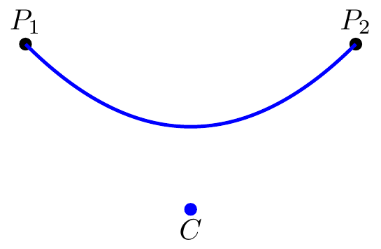

두 점 \(P_1,\,P_2\) 사이에 하나 이상의 제어점(control point) 를 두어 \(P_1,\,P_2\) 를 잇는 매끄러운 곡선을 만드는 방법이다.
이차 베지에 곡선
시작점과 끝점 \(P_1,\,P_2\), 그리고 하나의 제어점 \(C\) 가 주어졌다고 하자. \(t\in [0,\,1]\) 에 대해 \(Q_1\) 을 \(P_1\) 과 \(C\) 의 \(t\) 내분점, \(Q_2\) 를 \(C\) 과 \(P_2\) 의 \(t\) 내분점이라고 하자. 즉 \(t\in [0,\,1]\) 에 대해 \(Q_1 = (1-t)P_1 + tC\), \(Q_2=(1-t)C + tP_2\) 이다. 이 때 \(P_1,\,P_2,\,C\) 에 의해 정해지는 이차 베지어 곡선 \(X(P_1, P_2, C, t)\) 는
\usetikzlibrary{calc}\tikzset{ quadratic/.style={ to path={ (\tikztostart) .. controls ($#1!1/3!(\tikztostart)$) and ($#1!1/3!(\tikztotarget)$) .. (\tikztotarget) } }}\begin{tikzpicture}[scale=1.0]\filldraw [black] (-2, 2) circle (2pt) node[anchor=south] {$P_1$};;\filldraw [black] (2, 2) circle (2pt) node[anchor=south] {$P_2$};\filldraw [blue] (0,0) circle (2pt)node[anchor=north, black] {$C$};\draw[blue,very thick] (-2, 2) to[quadratic={(0, 0)}] (2, 2);\end{tikzpicture}

그림 1: 이차 베지에 곡선
위의 그림은 tikz 로 그렸다. tikz 는 제어점을 하나만 줄 때에도 아래의 사차 베지에 곡선으로 그리기 때문에 베지에 곡선을 그리는 명령어를 사용 하지 않았다.
사차 베지에 곡선
시작점 \(P_1\), 끝점 \(P_2\), 제어점 \(C_1\), \(C_2\) 가 주어졌을 때 \(t\in [0, 1]\) 에 대해 \(P_1,\,C_2\) 를 양 끝점으로 하고 \(C_1\) 을 제어점으로 하는 이차 베지에 곡선 \(X_Q(P_1, C_2, C_1, t)\) 를 생각 할 수 있다. 또한 \(C_1,\, P_2\) 를 양 끝점으로 하고 \(C_2\) 를 제어점으로 하는 이차 베지에 곡선 \(X_Q(P_1, C_2, C_1, t)\) 를 생각 할 수 있다. 사차 베지에 곡선 \(X_C(P_1, P_2, C_1, C_2, t)\) 는 \(X_Q(P_1, C_2, C_1, t)\) 와 \(X_Q(P_1, C_2, C_1, t)\) 의 \(t\) 내분점으로 정의된다. 즉,